On the console PC, press the
Windows key and select File Explorer or type
file explorer to open the program.
In File Explorer, right-click
Local Disk (C:) and select
Properties.
Figure 416:
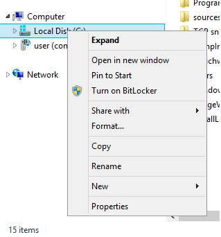
If the Free space is less than 2 GB, delete log files from the console PC.
Figure 417:
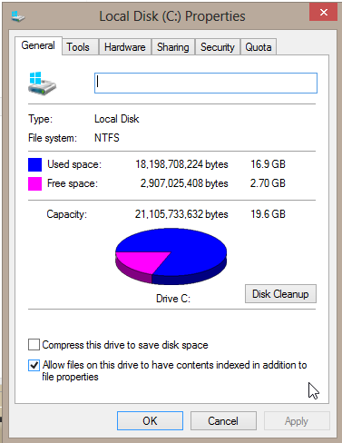
Close the Properties window.
Check the Event Log for errors that indicate problems with saving files or data.
Press
Windows key, type
view event, select
Settings, and open the
View event logs program.
Figure 418:
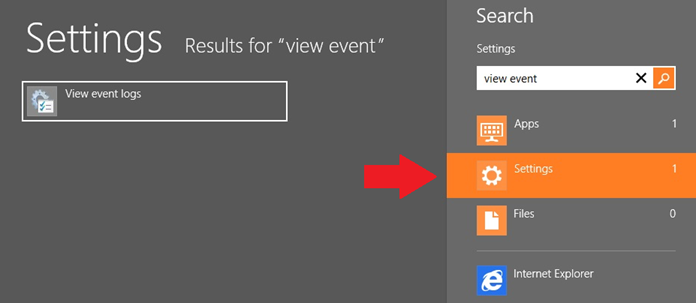
Inspect the messages in the Event Viewer application log for
Hard Drive Full errors or
NTBackup errors that could be caused by a full hard drive.
Select
Application > Security > Setup > System > Forwarded Events on the left window panel and view the events in each section.
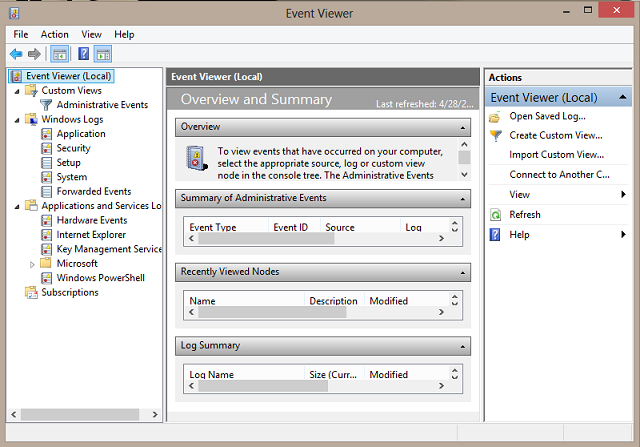
Clear all events and save a copy of each event.
The events are:
Application
Security
Setup
System
Forwarded Events
Select
Event > Action > Clear Log, and then select
Save and Clear to the
Save a copy dialog window.
Note:
Name the copy with the event type and the deletion date (i.e., Application-01-01-17).
Clearing the contents of the Event Viewer application log reduces the likelihood of
Event Log Full error messages.
System problems other than a full hard drive can cause
Event Log Full error messages. Identify the source of repetitive events and troubleshoot them.
Delete the log files from the console PC.
On the console PC, launch Windows Explorer. Press the
Windows key, and then select
File Explorer
icon or type
file explorer and open the program.
In the Windows Explorer, navigate to the
C:\NexGen\Console\DRW folder and delete the following groups of files from the folder:
AUInstrMdLog01-10.txt
DxIToDxCLog01-10 txt
EventSinkLog01-10.txt
LISQueryTestLog01-10.txt
EventSinkThreadLog01-10.txt
RunManagerLog01-10.txt
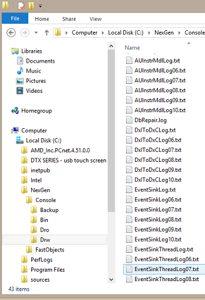
Navigate to the
C:\NexGen\Console\Backup folder and delete the AU folder from the folder. The backup process copies the files in the instrument
C:\AU\Log folder into the
PC C:\Backup\AU\Log folder. Delete the files in both places.
Navigate to the
C:\NexGen\Console folder and delete any copy of DRW, DRW-New or DRO-New folders.
Navigate to the
C:\NexGen\Console\Bin folder and delete any DUMP files.
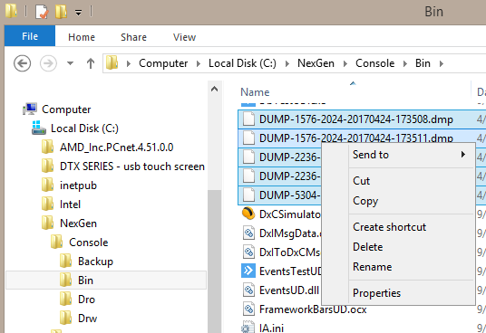
Close File Explorer.
Exit the user interface.
From the Main Menu, press
[Alt] + [F4].
Type the password
Access2Support and press
Enter.
Double-click on the
Recycle Bin icon on the desktop and select
Empty Recycle Bin.
Double-click the
Computer icon at the top left corner of the AU desktop to open the
Computer browser window.
Right-click on the
Local Disk (C:) drive and select
Properties.
Review the hard drive capacity information.
If the capacity is less than 7.32 GB, replace the AU hard drive.
If the free space is less than 2 GB, delete the instrument log files.
Close theProperties window, but leave the
Computer browser window open.
Delete the instrument log files.
In the
Computer browser window, navigate to the
C:\AU folder and delete the following groups of files:
Display1-10.txt
DxICommCEHist01-10.log
DxITCPThreadLog01-10.log
UCTACommCEHist01-10.log
Events1-10.txt
Motors1-10.txt
Timeline1-10.txt
Warn1-10.txt
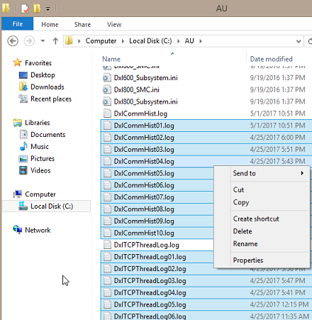
In the
My Computer browser window, navigate to the
C:\AU\Log folder and delete all files that are not in-use:
Display-
Packs-
ProcMonData-
SMC-
Trace-
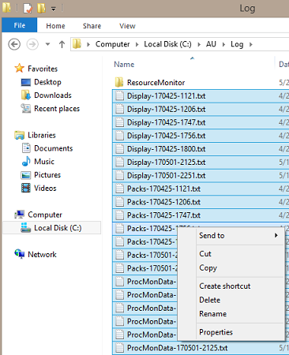
Note: The most recent copy of each file type is in-use when the machine control program is running. Skip the delete in-use files step, or exit the machine control program, and then delete the in-use files. Exiting the machine control program cancels tests. Restarting the machine control program initializes the system. To restart the machine control program, select the large
Y icon.
Navigate to the recycle bin and select
File > Empty Recycle Bin.
Close the
Computer browser window and exit Desktop Sharing.
Confirm that the backup runs and completes successfully.
Note: If user interface was exited, then relaunch the user interface.
Double click on the
NexGen Application shortcut on desktop, or press
Windows key, select
NexGenUI UD icon or type
nexgenui and open the program.
In the user interface, press the
Print Screen key and confirm that the print job completes.
Note: There might be an Event Log error message for the first print job or for each deleted print job.
The backup program copies the database files into the backup folder on the PC and then begins to copy the backup folder files onto the tape. The backup takes approximately 14 minutes.
Delete hard drive files in Windows XP.
Check the Event Log for errors that indicate problems with saving files or data.
On the console PC, press the
Windows key, and then select
Programs > Administrative Tools > Event Viewer.
Inspect the messages in the Event Viewer application log for
Hard Drive Full errors or
NTBackup errors that could be caused by a full hard drive.
Select
Application > Security > System on the left window panel and view the events in each section.
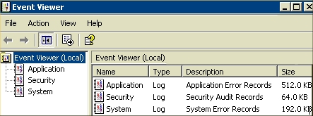
Clear all events and save a copy.
Select
Action > Clear All Events, and then select
Yes to the
Save a copy dialog window.
Note:
Name the copy with the deletion date (i.e., 01-01-05).
Clearing the contents of the Event Viewer application log reduces the likelihood of
Event Log Full error messages.
System problems other than a full hard drive can cause
Event Log Full error messages. Identify the source of repetitive events and troubleshoot them.
Confirm the status of the console PC hard drive.
On the console PC, launch Windows Explorer. Press the
Windows key, and then select
Programs >
> Windows Explorer.
In Windows Explorer, right-click on the C:\ drive and select
Properties.
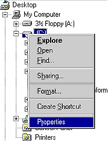
Review the hard drive capacity information. If the free space is less than 2 GB, delete log files from the console PC.
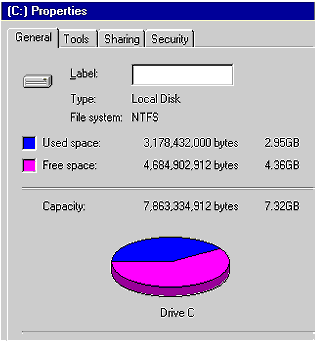
Close the
Properties window.
Delete the log files from the console PC.
On the console PC, launch Windows Explorer. Press the
Windows key, and then select
Programs > Windows Explorer.
n the File Explorer, navigate to the
C:\NexGen\Console\DRW folder and delete the following groups of files from the folder:
AUInstrMdLog01-10.txt
DxIToDxCLog01-10 txt
EventSinkLog01-10.txt
LISQueryTestLog01-10.txt
EventSinkThreadLog01-10.txt
RunManagerLog01-10.txt
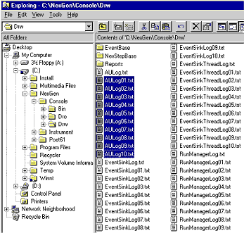
Navigate to the
C:\NexGen\Console\Backup folder and delete the AU folder from the folder. The backup process copies the files in the instrument
C:\AU\Log folder into the
PC C:\Backup\AU\Log folder. Delete the files in both places.
Navigate to the
C:\NexGen\Console folder and delete any copy of DRW, DRW-New or DRO-New folders.
Navigate to the
C:\NexGen\Console\Bin folder and delete any DUMP files.
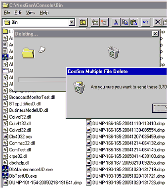
Navigate to the recycle bin and select
File > Empty Recycle Bin.
Double-click the
My Computer icon at the top left corner of the AU desktop to open the
My Computer browser window.
Right-click on the
Local Disk (C:) drive and select
Properties.
Review the hard drive capacity information.
If the capacity is less than 7.32 GB, replace the AU hard drive.
If the free space is less than 2 GB, delete the instrument log files.
Close theProperties window, but leave the
My Computer browser window open.
Delete the instrument log files.
In the
My Computer browser window, navigate to the
C:\AU folder and delete the following groups of files:
Display1-10.txt
DxICommCEHist01-10.log
DxITCPThreadLog01-10.log
UCTACommCEHist01-10.log
Events1-10.txt
Motors1-10.txt
Timeline1-10.txt
Warn1-10.txt
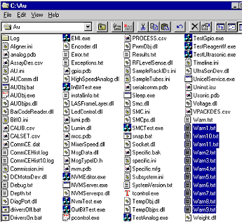
In the
My Computer browser window, navigate to the
C:\AU\Log folder and delete all files that are not in-use:
Display-
Packs-
ProcMonData-
SMC-
Trace-
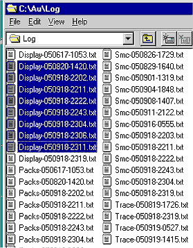
Note: The most recent copy of each file type is in-use when the machine control program is running. Skip the delete in-use files step, or exit the machine control program, and then delete the in-use files. Exiting the machine control program cancels tests. Restarting the machine control program initializes the system. To restart the machine control program, select the large
Y icon.
Navigate to the recycle bin and select
File > Empty Recycle Bin.
Close the
My Computer browser window and exit Desktop Sharing.
Confirm that the backup runs and completes successfully.
Note: If user interface was exited, then relaunch the user interface.
Select
Start > Programs > NexGen > NexGenUI UD.
In the user interface, press the
Print Screen key and confirm that the print job completes.
Note: There might be an Event Log error message for the first print job or for each deleted print job.
The backup program copies the database files into the backup folder on the PC and then begins to copy the backup folder files onto the tape. The backup takes approximately 14 minutes.